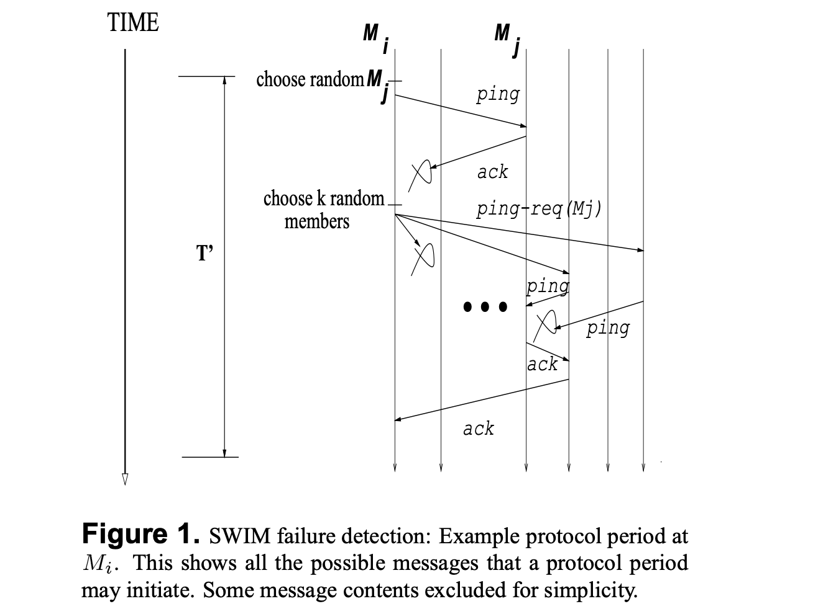

#0607 Serf¶
Consul 底层使用 Serf 来实现成员管理、广播消息（gossip protocol）的功能。Serf 又是基于 SWIM: Scalable Weakly-consistent Infection-style Process Group Membership Protocol 实现。
代码：https://github.com/hashicorp/serf/tree/master/serf
SWIM 协议概述¶
SWIM 包含两个组件：
故障检测器（Failure Detector），检测集群中某个成员是不是有故障下线了。
广播组件，用于将检测出来有问题的成员广播给其它的成员。
首先，故障检测器。以集群中的任意一台机器 \(M_i\) 为例，首先检测每 \(T'\) 周期执行一次，每个周期的开始，\(M_i\) 从集群的成员列表中随机选择一个非自身的其它成员，比如 \(M_j\)，给其发送一个 ping 消息，如果成功收到 ack 消息那 \(M_j\) 正常，如果超时没有收到消息，那么 \(M_i\) 另外随机选择 \(k\) 个其它成员，向他们发送 ping-req( \(M_j\) ) 消息，让他们 ping \(M_j\) 并将 ack 转发给 \(M_i\)。整个过程中，只要 \(M_i\) 收到一个 ack，那么就认为 \(M_j\) 正常，否则标识 \(M_j\) 为可疑，连续多次可疑，则认为该机器故障，就使用广播组件将 \(failed(M_j)\) 信息发送给其它成员。
广播组件将 failed 信息承载在故障检测使用的 ping、ping-req、ack 消息之上（也就是说不主动发送消息，而是接下来故障组件有消息要发送的时候，将要发送的 failed 信息包含在内发送出去），将消息 gossip 给其它成员。收到消息的成员通过同样的方法再 gossip 给其它成员，如此这般最终收敛所有的成员获取到该消息。
Serf 和 SWIM 不同的地方¶
Serf 的实现和 SWIM 有些微差别，首先，为了让 gossip 消息的传播收敛速度更快，Serf：
每隔一段时间会整个集群所有成员做一次状态的全同步（full state sync）。
有一个独立的 gossip 协议层，并且同时使用 SWIM 的故障检测相关消息来发送 gossip 消息。
保留故障成员的信息（failed 信息）一段时间，这样全同步的时候可以将 failed 信息同步给其它成员。
另外，还有一个 Lifeguard 机制解决因为 CPU 负载高/网络抖动导致的误识别。详细见：